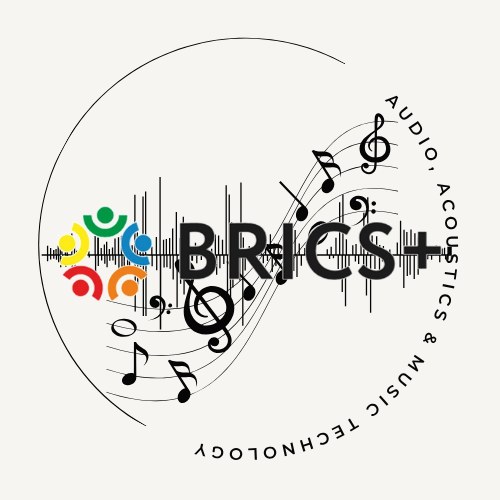

The Sound Travels Ear Training
☀️
Streak
0
0
/
0
New Session
🌙
Quiz
Dictionary
Intervals
Chords
Scales
Progressions
Root note
▸
Show root note
Settings
▸
Voicing
Playback style
Interval style
Scale direction
Octave register
Play interval (together)
♩
Loading piano samples…
Notation
▾
C
Key
Breakdown
▾
Select your answer…
▸ Session stats
Accuracy by type
Reset
Type
Correct
Total
%
Space = play · Enter = next